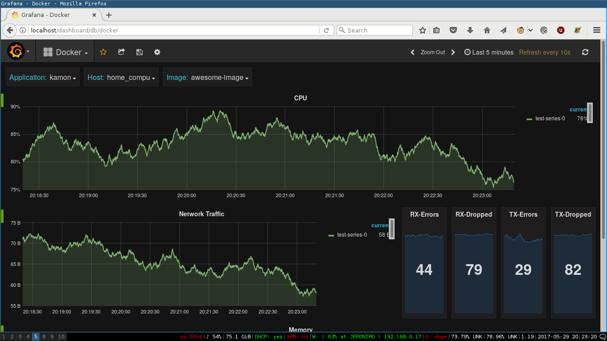
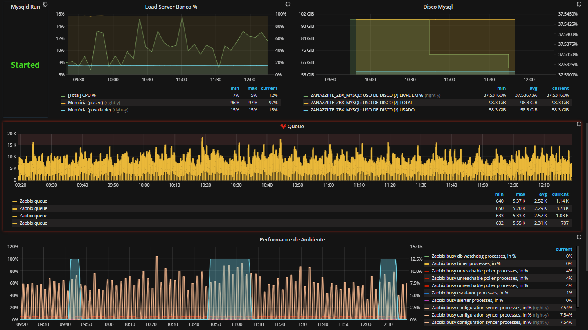

class: center, middle, inverse # Monitoring Tour #### [StatsD + graphite + grafana] ## [Manuel Pineda - [pin3da](//pin3da.github.io)] --- # Agenda - ### Goal - ### StatsD - ### Graphite/Carbon - ### Graphana - ### Demo time --- # Goal 1/2  --- # Goal 2/2  --- # StatsD Frontend proxy for Graphite/Carbon, created at etsy and based on ideas from Flickr. Push based client that export metrics to a collection server, which in turn derives aggregate metric -- #### Server implementations: Go, C, Clojure, .red[**NodeJs**], Python, Ruby, ... -- #### Client implementations: Java, C, CPP, .red[**NodeJs**], Go, Haskell, ... .footnote[See all in the [project site](//github.com/etsy/statsd/wiki)] --- # StatsD Metrics 1/2 A metric is a measurement composed of a name, a value, a type, and sometimes additional information describing how a metric should be interpreted. ``` <metric name>:<value>|<type> ``` -- ## Gauges A gauge is an instantaneous measurement of a value. ``` <metric name>:<value>|g ``` -- ## Counters A counter is a gauge calculated at the server. ``` <metric name>:<value>|c[|@<sample rate>] ``` --- # StatsD Metrics 2/2 ## Timers A timer is a measure of the number of milliseconds elapsed between a start and end time ``` <metric name>:<value>|ms ``` -- ## Histograms A histogram is a measure of the distribution of timer values over time, calculated at the server. ``` <metric name>:<value>|h ``` -- ## Meters They may also be thought of as increment-only counters. ``` <metric name>:<value>|m ``` --- # Graphite/Carbon Graphite does two things: - Store numeric time-series data - Render graphs of this data on demand -- Graphite consists of 3 software components: - carbon - a Twisted daemon that listens for time-series data - whisper - a simple database library for storing time-series data (similar in design to RRD) - graphite webapp - A Django webapp that renders graphs on-demand using Cairo --- # Grafana ### Visualization tool: - #### time series - #### infrastructure - #### industrial sensors - #### weather - #### process control .footnote[[playroom](//play.grafana.org)] --- # Demo time !! 1/3 #### install all the things Clone the repo ```bash git clone git@github.com:kamon-io/docker-grafana-graphite.git ``` Start everything ```bash make up ``` Stop everything ```bash make down ``` --- # Demo time !! 2/3 - log in with admin/admin - **Important** add graphite as data source !! - Start creating your dashboars --- # Demo time !! 3/3 #### create your super cool app ```javascript var StatsD = require('node-statsd') var http = require('http') var client = new StatsD({ prefix: 'prereirajs.' }) // Timing: sends a timing command with the specified milliseconds client.timing('response_time', 42); // Increment: Increments a stat by a value (default is 1) client.increment('my_counter'); // Decrement: Decrements a stat by a value (default is -1) client.decrement('my_counter'); // Histogram: send data for histogram stat client.histogram('my_histogram', 42); ``` --- class: center, middle, inverse # Thanks Slides available at [pin3da.github.io/slides](//pin3da.github.io/slides/)